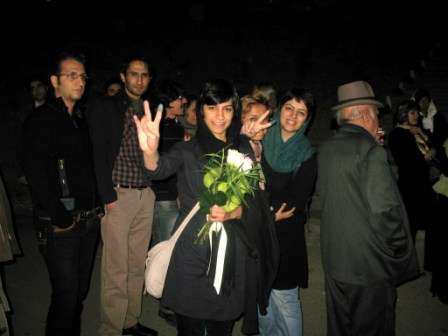

|
|
راحله عسگری زاده و وحیده مولوی آزاد شدند
پنج شنبه21 آبان 1388
تغییر برای برابری: راحله عسگری زاده و وحیده مولوی از فعالان کمپین در جنبش زنان آزاد شدند.
راحله عسگری زاده و وحیده مولوی که از روز 13 آبان توسط نیروهای امنیتی بازداشت شده بودند شب گذشته به قید کفالت از زندان اوین آزاد شدند.
این دو فعال جنبش زنان و کمپین در یک هفته¬ی گذشته به همراه 40 زن دیگری که به گفته ی آنان بیشتر مادر و دختران رهگذر بودند در بند متادون و در وضعیت قرنطینه به سر بردند که شب گذشته به همراه ده نفر دیگر از هم¬بندی های خود آزاد شدند.

راحله عسگری زاده می گوید در بازجویی اولیه در بازداشت¬گاه وزرا اتهامات اخلال در نظم و اجتماع و تبانی برای اقدام علیه امنیت ملی نظام به وی تفهیم شده است و اتهام وحیده مولوی نیز اخلال در نظم عمومی عنوان شده است.
ساناز غفوری فعال اجتماعی و کارگری به همراه چهار نفر دیگر از زنان بازداشت شده در روز 13 آبان هنوز در بند متادون و در انتظار تبدیل قرار بازداشت خود هستند و گفته می شود که این افراد نیز با تودیع قرار کفالت به زودی آزاد خواهند شد.